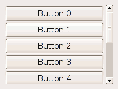

Creates a new scrolled window. The two arguments are the scrolled window's adjustments; these will be shared with the scrollbars and the child widget to keep the bars in sync with the child.
Usually you want to pass null for the adjustments, which will cause the scrolled window to create them for you.
Example 111. Scrolling a list of buttons
<?php
//Create a new scrolled window
$scrwnd = new GtkScrolledWindow();
//hide scrollbars when not needed
$scrwnd->set_policy(Gtk::POLICY_AUTOMATIC, Gtk::POLICY_AUTOMATIC);
//make it look nicer
$scrwnd->set_border_width(10);
//now create a vbox with buttons that shall be scrollable
$vbox = new GtkVBox();
for ($i = 0; $i < 10; $i++) {
$vbox->pack_start(new GtkButton('Button ' . $i));
}
//Add the box to the scrolled window, but use a viewport
// between them - since the vbox doesn't support scrolling natively.
$scrwnd->add_with_viewport($vbox);
//standard stuff for window creation
$wnd = new GtkWindow();
$wnd->connect_simple('destroy', array('Gtk', 'main_quit'));
$wnd->add($scrwnd);
$wnd->show_all();
Gtk::main();
?> |
It will look like this:
